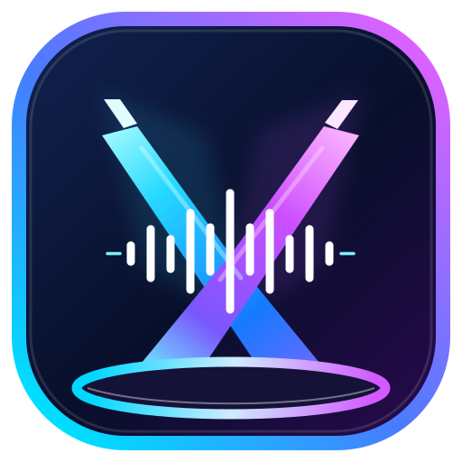
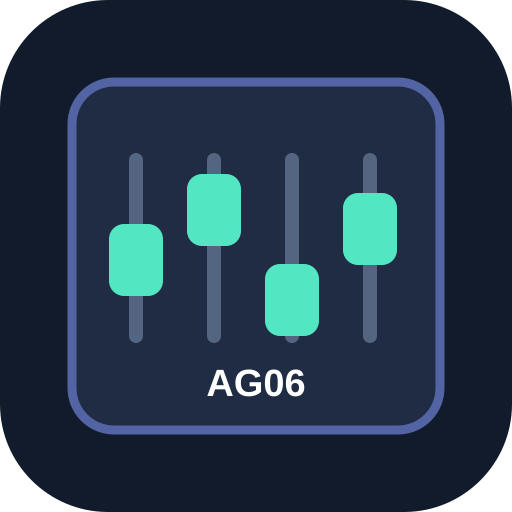
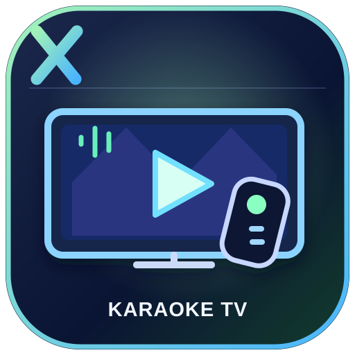
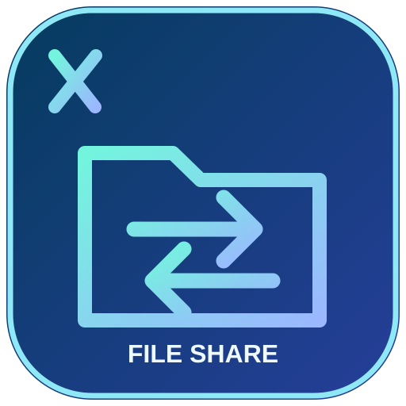

ANDROID · APP CENTER
ดูรายละเอียด
X-Stage Apps Portal
ศูนย์รวมและดาวน์โหลดแอป X-Stage ในแอปเดียว อัปเดตรายการจากเว็บไซต์โดยตรง
ตรวจสอบ APK ล่าสุด…ดาวน์โหลด APK
เสียงเพลง · เทคโนโลยี · การสร้างสรรค์ศูนย์รวมแอป X-Stage ที่ออกแบบให้ทุกอุปกรณ์ทำงานได้ลงตัว เริ่มร้องเพลงบนเว็บ เตรียมเพลงด้วย Song Studio หรือส่งภาพขึ้นจอใหญ่ — สำรวจทุกแอปได้จากที่นี่
ดาวน์โหลดเฉพาะไฟล์ติดตั้ง Windows .exe และ Android .apk ที่เผยแพร่และตรวจสอบแล้ว หรือเปิดแอปเว็บได้ตามปกติ
คุณสามารถดูแอปทั้งหมดได้ รวมถึงแอปที่ติดตั้งบนอุปกรณ์อื่น
ศูนย์รวมและดาวน์โหลดแอป X-Stage ในแอปเดียว อัปเดตรายการจากเว็บไซต์โดยตรง
ตรวจสอบ APK ล่าสุด…ดาวน์โหลด APKโปรแกรมคาราโอเกะสำหรับคอมพิวเตอร์ Windows
ตรวจสอบไฟล์ติดตั้ง…ดาวน์โหลด EXEวิดีโอ · แบ่งโหลด 1–32 ช่วง · Chrome/Edge · ตรวจอัปเดต
ตรวจสอบ Windows Preview…⬇ ดาวน์โหลด Setup EXE
มิกเซอร์ซอฟต์แวร์ · เลือก USB Audio · เอฟเฟกต์ · บันทึกเสียง สำหรับ AG06 รุ่นแรก
เว็บพร้อมใช้งาน · EXE/APK ยังรอผล Buildนำเข้า NCN · ตรวจเนื้อร้อง · ปาดสีจากเวลาเพลงจริง · สร้าง .X
ตรวจสอบ Windows Preview…ดาวน์โหลด EXE
คาราโอเกะสำหรับ Android TV และแท็บเล็ต
ตรวจสอบ APK ล่าสุด…ดาวน์โหลด APKรับภาพ iPhone/iPad · ชื่อ X-Stage Mirror PC No.XXXX แสดงบนจอ
ตรวจสอบรุ่นล่าสุด…⬇ ดาวน์โหลด Setup EXE สำหรับ iOSรับภาพ Android ผ่าน Wireless Display ของ Windows และแสดงชื่อ PC จริง
ตรวจสอบรุ่นล่าสุด…⬇ ดาวน์โหลด Setup EXE สำหรับ Androidรับภาพหน้าจอจาก iPhone และ iPad บนทีวี
ตรวจสอบการเผยแพร่…⬇ ดาวน์โหลด APK สำหรับทีวี
รับ–ส่งไฟล์ผ่าน LAN หรืออินเทอร์เน็ตด้วย QR และเบราว์เซอร์
ตรวจสอบ APK รุ่น Preview…⬇ ดาวน์โหลด APK รุ่นทดสอบไม่พบแอปที่ตรงกับตัวกรอง ลองเปลี่ยนหมวดหมู่หรือแพลตฟอร์ม
X-Stage รวมเครื่องมือด้านคาราโอเกะและการเตรียมเพลงไว้ในระบบนิเวศเดียวกัน หน้านี้เป็นจุดเริ่มต้นสำหรับเลือกแอป ตรวจสอบสถานะเผยแพร่ และไปยังช่องทางที่เหมาะสม โดยไม่ต้องค้นหาลิงก์แยกหลายแห่ง
ดูแอปและไฟล์ติดตั้งสำหรับผู้ใช้ทั่วไปผู้ใช้ทั่วไปอ่านรีวิวได้ เข้าสู่ระบบ Google เพื่อให้คะแนน
X-Stage ใช้บัญชี Google สำหรับเข้าสู่ระบบ ไม่ใช่บัญชี Apple และไม่มีเมนูชำระเงินหรือจัดส่งสินค้า
ข้อมูลโปรไฟล์ที่ได้รับจากบัญชี Google ซึ่งใช้เข้าสู่ระบบ X-Stage
บันทึกการกดดาวน์โหลดและรายการที่คุณยืนยันการติดตั้งเอง ไม่สามารถตรวจสอบได้ว่าติดตั้งบนอุปกรณ์สำเร็จจริง
ประวัติกิจกรรมที่ผู้ใช้ยินยอมให้บันทึก
เลือกแอปเพื่อดู แก้ไข หรือลบรีวิวของคุณในหน้ารายละเอียดแอป